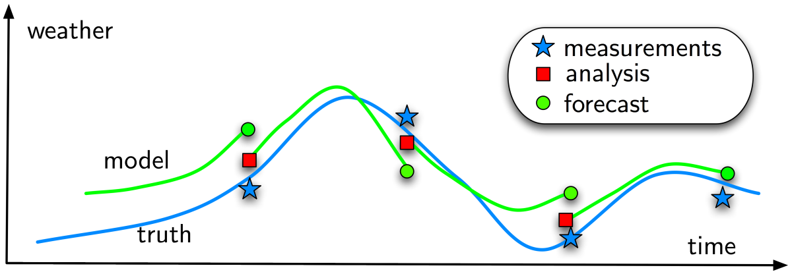
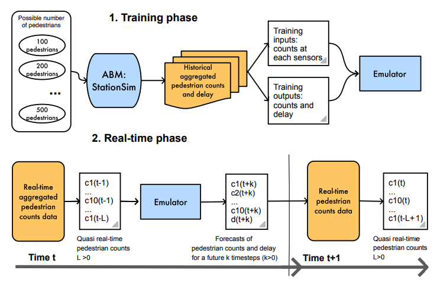

Data-driven Agent-Based Models:
bringing together machine learning and city simulation
Minh Kieu
Lecturer
University of Auckland
These slides:
https://leminhkieu.github.io/p/MK-ABM.html
Cities are changing rapidly, forcing policy makers to make decision faster and more frequent
How do science support policy makers?
We need a platform to evaluate future policies:
Transport – how to reduce congestion?
Pollution – who is being exposed? Where are the hotspots?
Economy – can we attract more people to our city centre?
Health - can we encourage more active travel?
Uncertainty
The reality is dynamic: Non-linear models predict near future well, but diverge over time.
The reality is stochastic: No set of parameters would perfectly explain the real system.
There is no systematic mechanism to incorporate new data into agent-based models
1. Data Assimilation for Agent-Based Models
Improve estimates of the true system state by combining noisy, real-world observations and model estimates of the system state
DUST: Data Assimilation for Agent-Based Models.

Example 1
Bus Simulation with a Particle Filter
Context: simulate bus routes in real time
We have GPS bus positions, but to make good term forecasts we need to be able to infer other factors
Number of people waiting at bus stops
Number of people on the bus
Surrounding traffic levels
Etc.
Aim: test a particle filter as the means of assimilating real-time GPS positions into a model.
Particle Filter

Create N realisations of the model ('particles')
Run each particle forward in time until you receive some new data
Compare the particles to the observation and:
Weight each particle depending on how close it is to the observations
Resample the population of particles using the weights (good particles are kept, bad ones disappear)
Repeat
Bus Simulation
Bus Simulation with a Particle Filter
Example 1
Bus Simulation with a Particle Filter
LM Kieu, N Malleson, A Heppenstall (2020) Dealing with uncertainty in agent-based models for short-term predictions Royal Society open science 7 (1), 191074
LM Kieu, D Ngoduy, N Malleson, E Chung (2019) A stochastic schedule-following simulation model of bus routes , Transportmetrica B: Transport Dynamics 7 (1), 1588-1610
Example 2
Crowd Simulation with a Particle Filter

Context: simulate a crowd in real time
What methods can we use to assimilate data?
How much data do we need?
Track every individual?
Track some individuals?
Just aggregate counts (e.g. number of people passing a footfall camera)
Case study: a simple, hypothetical train station (Station Sim)
Crowd Simulation with a Particle Filter

Real-time Crowd Simulation with an Emulator of Agent-based models
Example 2: Crowd Simulation with a Particle Filter
M Kieu, H Nguyen, J A Ward, N Malleson (2022) Towards Real-Time Predictions using Emulators of Agent-Based Models Journal of Simulation
Patrica Ternes, Jonathan A Ward, Alison Heppenstall, Vijay Kumar, Le-Minh Kieu, Nick Malleson (2021) Data assimilation and agent-based modelling: towards the incorporation of categorical agent parameters, Open Research Europe
R Clay, JA Ward, P Ternes, LM Kieu, N Malleson (2021) Real-time agent-based crowd simulation with the reversible jump unscented kalman filter Simulation Modelling Practice and Theory 113, 102386
N Malleson, K Minors, LM Kieu, JA Ward, AA West, A HeppenstallSimulating Crowds in Real Time with Agent-Based Modelling and a Particle Filter Journal of Artificial Societies and Social Simulation 23 ((3) 3)
2. A "Level 0" modelling approach: Inverse Generative Social Science
Issues with current development of ABMs:
Modellers' bias
Complex human behaviours
Agents homogeneity
IGSS: Use AI to craft agents' behaviours from data


IP3 QuakeCoRE - A Resilient Aotearoa New Zealand Transport System
Data-driven behavioural modelling
Case study: Auckland CBD
How can we mine data for our hungry simulation models?

Traffic analysis from traffic CCTV images
Extension: how to estimate the real-world trajectories and speed from just the 2D videos or images?
https://www.youtube.com/watch?v=8IJcoYMlR4YMining data for crowd simulation model
Also for: shared path safety analysis